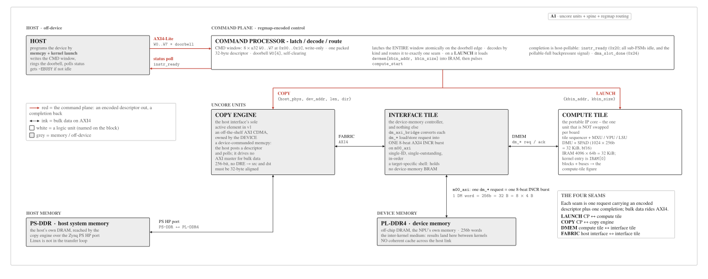
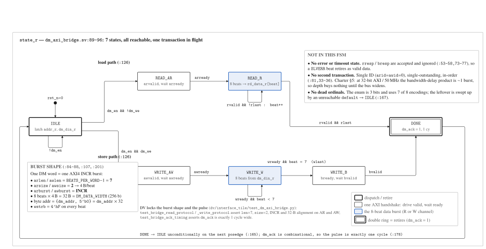

Uncore: Command, Host Interface, and Device Memory¶
Around the portable compute tile sits the uncore: the device-side machinery that turns
host commands into tile actions and moves bytes between host memory, device memory, and
SPAD. It is one system, historically documented as four units --- a command processor, a
host interface (copy engine), an interface tile (device-memory controller), and the
compute tile itself --- composed by a uniform inter-unit primitive: one request carrying an
encoded descriptor plus one completion, with bulk data on AXI4. This page folds the former
per-facet pages (architecture, control plane, host interface, interface tile, data movement)
into one device-level view. The design SSOT is docs/charter.md; constants are owned by
mininpu/isa / abi.py / params.py.
The uncore at a glance¶
mininpu is an IO-attached discrete accelerator: a host (with system memory) programs the NPU (with its own device memory) by memcpy + kernel launch. The host writes an encoded command descriptor into a small write-only CMD window and rings a self-clearing doorbell; the command processor latches and decodes it on the doorbell edge and routes it --- a kernel launch to the compute tile, a copy to the host interface's copy engine. Bulk data does not cross a separate host-DMA stream: a memcpy is serviced by the device's own copy engine (an AXI CDMA) moving data host memory ↔ device memory over the AXI fabric. The NPU owns a second channel: an AXI4 master to off-chip DRAM (PL-DDR4) for bulk weight streaming. DRAM is the inter-kernel medium; there is no coherent cache across the link.

Fig. A6. The uncore: units, data spine, and regmap routing. The host writes the encoded CMD window and rings the doorbell; the command processor latches the window atomically and routes the descriptor to exactly one seam -- a LAUNCH to the compute tile, a COPY to the copy engine. Red is the command plane (one encoded descriptor out, one completion back); ink is bulk data on AXI4. The unit row is ordered so that every bulk-data link is between neighbours, which leaves the two control seams as the only long edges.
The four units and the memory hierarchy:
Table: the v1 on-chip memory hierarchy. Capacities/widths are owned by npu_config_pkg.sv; the memory tile is [v3]-deferred and absent here.
| Memory | Capacity | Notes | Source |
|---|---|---|---|
| SPAD | 32 KiB (1024×256-bit) | bf16 operand memory; Port A = DMU, Port B = compute | spad.sv |
| VREG | 32 regs (V0--V31) | fp32 vector register file; 8 lanes each; 5-bit id | vec_regfile.sv |
| Device memory | off-chip PL-DDR4 | interface tile: dm_axi_bridge → m00_axi (AXI4) |
dm_axi_bridge.sv |
| IRAM | 32 KiB (4096×64-bit) | instruction memory; Port B = sequencer fetch | npu/ |
The precision flow is a single v1 numeric story: storage STORAGE_FORMAT = BF16 → PE
multiply MUL_FORMAT = BF16 → ACCUM_FORMAT = FP32, hardwired (owned by npu/params.py).
Narrow multiply, wide accumulate: avoids K-loop cancellation.
Command path: regmap-encoded control¶
The host drives the device over AXI4-Lite: it writes one packed command descriptor
(32 bytes / 8×u32, W0..W7) into the write-only CMD window and asserts the self-clearing
doorbell (slv_reg0[4]). The command processor (command_processor.sv) latches the
entire window atomically on the doorbell edge and decodes by kind: a LAUNCH or a COPY.
On a LAUNCH it reads the kernel binary from device memory (kbin_addr, kbin_size) into the
compute tile's IRAM, then pulses compute_start. On a COPY it drives the copy-engine command
port with {host_phys, dev_addr, len, dir}. Completion is host-pollable: instr_ready
(a combinational all-idle flag, also the pollable-full backpressure signal) and
dma_slot_done (async DMA). The host API returns -EBUSY if the device is not idle. The
authoritative register map, descriptor layout, and doorbell protocol are owned by
mininpu/abi.py; see the ABI spec.
Data spine: host memory to device memory¶
The host interface is the host-memory connection unit; its sole active element in v1 is the device-owned copy engine (an off-the-shelf AXI CDMA). On a COPY descriptor it DMAs directly between PS-DDR (host system memory, via the Zynq PS HP port) and PL-DDR4 (device memory, via the interface tile) over the AXI fabric --- Linux is not in the transfer loop. This is a device-commanded memcpy: the host posts a high-level COPY descriptor and polls; it does not drive an AXI master for bulk data. Both source and destination addresses must be 32-byte aligned (the v1 CDMA is 256-bit with no DRE), which the runtime enforces before issuing the descriptor.
Device-memory controller¶
The interface tile (npu/src/interface_tile/) is the device-memory controller only:
it serves off-chip PL-DDR4 to the compute tile's DMU and to the copy engine. Its core module
dm_axi_bridge converts each dm_* load/store request into an 8-beat AXI4 INCR burst on
m00_axi, the master port to the DDR4 MIG. The tile is a target-specific shell: the DDR /
HBM controller changes per target (PL-DDR4 MIG on ZCU102, HBM on a future card); it is not a
compute unit and holds no on-chip device-memory BRAM. In v1 the bridge runs on the 50 MHz
compute clock; a CDC at the DMEM boundary can later decouple the AXI/MIG side (200-300 MHz).

Fig. 1.dm_axi_bridge burst FSM. One dm_* request → one 8-beat AXI4 INCR burst.
Load: IDLE → READ_AR → READ_R → DONE. Store: IDLE → WRITE_AW → WRITE_W → WRITE_B → DONE.
dm_ack is a combinational 1-cycle pulse in DONE. Single-ID, single-outstanding, in-order.
Deeper dive: dm_axi_bridge burst FSM, parameters, and the AXI-sync pitfall
Burst parameters (hardcoded in dm_axi_bridge.sv): arlen/awlen = 7 (8 beats,
AXI4 encoding), arsize/awsize = 2 (4 B per beat, 32-bit bus), arburst/awburst = 1
(INCR). One DM word is DM_DATA_WIDTH (256) bits = 32 B = 8 × 4 B, so one DM request maps
to exactly one burst, no re-issue. In READ_AR the bridge asserts arvalid until
arready; READ_R accepts rvalid beats into dm_dout one word per cycle, completing on
rlast; the write path streams wdata from dm_din (wlast on beat 7).
AXI / protocol-sync pitfall (RTL taxonomy): drive derived pointers off the registered handshake, not a combinational decode of it --- a recurring AXI bring-up trap. The specific warning is an inline comment at its code site.
Deeper dive: why v1 is single-outstanding async (the BDP argument)
The as-built path is 32-bit AXI at 50 MHz: 32 b × 50 MHz ≈ 200 MB/s, roughly 1% of PL-DDR4 peak. At this bandwidth the bandwidth-delay product (BDP) is approximately one burst (≈ 200 MB/s × ~160 ns DDR latency ≈ 32 B), so bus width, not outstanding depth, is the binding bottleneck. Consequently v1 is single-outstanding async: one async prefetch slot in the background hides the fill latency; multiple-outstanding buys nothing until the AXI path is widened toward the 256-bit DM-word width and clocked up (the [v1+] lever). The specific numbers here are current-config figures, illustrative not spec.
Deeper dive: DMA burst parameters and the address formula
One DM word = 256 bits = 32 bytes maps to one 8-beat AXI4 INCR burst. The byte address is
absolute: byte_addr = dm_addr × 32 ({dm_addr, 5'b0}); the former devmem_base CSR is
folded out in v8, so the COPY dev_addr is the absolute device physical byte address. The
row loop iterates base + row × stride via the reused dma_addr_gen AGU.
End-to-end movement (round trip)¶
One GPT-2 BF16 forward-pass step, host to compute and back:
- H2D copy. The host writes COPY descriptors and rings the doorbell; the CP routes each
to the copy engine, which DMAs PS-DDR → PL-DDR4. Transfers: BF16 weights, the BF16
activation vector, and the kernel binary. Host polls
instr_readybetween transfers. - Kernel launch. The host writes a LAUNCH descriptor
{kbin_addr, kbin_size}; the CP loadsdevmem[kbin_addr, kbin_size]into IRAM, then pulsescompute_start. Entry is IRAM[0]; v1 has no runtime kernargs (operand addresses are compile-baked). - DMA loads (devmem → SPAD). The sequencer executes
dmu.load.spm; thedm_axi_bridgeissues INCR bursts onm00_axiand fills SPAD Port A. With the async flag, Port A fills while the sequencer computes on Port B;dma_slot_done[slot]signals completion,flush.slotfences. - MXU / VPU compute. The sequencer dispatches
mxu.load.w+mxu.matmuland the VPU ops (LayerNorm, attention softmax, GELU). BF16 storage throughout; ACC is always FP32. - Store + D2H copy.
dmu.store.spmwrites BF16 results SPAD → devmem; onhalt,instr_readyasserts; the host issues adir=D2HCOPY and the copy engine returns the result to the host buffer.
Table: per-unit mechanics reference: interface, owning unit, and detail page.
| Concern | Detail in |
|---|---|
Command window, doorbell, instr_ready |
this page · command_processor.sv · ABI spec |
| Copy engine, AXI CDMA, HP port, udmabuf | this page (host interface) |
dm_axi_bridge, AXI4 burst, dm_en/dm_ack |
this page (device-memory controller) |
Async DMA: dma_slot_done, flush.slot, ping-pong |
DMU |
| Systolic array / vector pipeline | MXU · VPU |
| ISA opcodes / ABI register map | ISA · ABI |
The four inter-unit interfaces (LAUNCH, COPY, DMEM, FABRIC) are the four request/completion
seams between these units; they are named by function, and the host-to-CP contract (CMD
window, doorbell, instr_ready) is invariant across v1/v2/v3.
Deeper dive: why the interfaces are named by function (B1--B4 retired)
The four inter-unit seams are named by function --- LAUNCH (command processor ↔
compute tile), COPY (command processor ↔ copy engine), DMEM (compute tile ↔
interface tile, the dm_* req/ack), FABRIC (host interface ↔ interface tile, AXI4).
The old opaque "B1--B4" labels are retired ("B" was unexplained and "L" collided with the
architecture Level-1/2/3 notation). A compact tag i1--i4 is available if a short label
is ever needed. This is naming rationale, not a mechanism.
OS, drivers, and cache model¶
This unit owns the host-side OS and driver contract, so the runtime and board bring-up have a single reference.
OS¶
A standard PetaLinux (ZynqMP) image is sufficient; no custom distribution is
required. The boot chain is the ordinary ZynqMP one: FSBL → PMU firmware → ATF (BL31) →
U-Boot → Linux, with the bitstream loaded by the FSBL (or fpga_manager).
Register access (UIO)¶
The NPU AXI4-Lite register block (CMD window, doorbell,
instr_ready, dma_slot_done) and the AXI CDMA register block are exposed as generic-uio
device-tree nodes (uio_pdrv_genirq); the user-space runtime mmaps /dev/uioX and pokes
the registers directly. The CDMA is deliberately not bound to the in-kernel dmaengine
driver, and dma-proxy is not used: the device commands its own copy engine.
Host buffers (udmabuf + CMA)¶
The udmabuf out-of-tree kernel module (a PetaLinux
recipe) allocates physically contiguous buffers from a reserved CMA region (sized via the
cma= bootarg or a reserved-memory node) and exposes /dev/udmabufX. The runtime opens the
node with O_SYNC for a non-cached mapping, which is what makes the memcpy path coherent
with no explicit cache operations. Cached-with-explicit-sync and a coherent HPC port
(CCI-400, dma-coherent, lower bandwidth) are alternatives; v1 uses the non-cached udmabuf as
the minimal, known-good option.
SMMU and isolation¶
The ZynqMP SMMU does not translate the PL DMA master (its default
state), so host_phys is used directly. The consequence: a PL master holding a physical
address can reach any PS-DDR location. This is acceptable for a single-tenant appliance; a
vfio-platform / SMMU path is the hardening option if isolation is later required.
Interconnect and engine choice¶
The PL→PS HP port carries the CDMA's PS-DDR traffic and the PL-DDR4 MIG backs device memory; both are instantiated in the board block design. An in-fabric AXI CDMA is chosen over the PS hardened GDMA/ADMA because the device must own its copy engine (the PS DMA is a host-side resource); the streaming AXI DMA does not apply (there is no stream endpoint). Nothing beyond the above is required.
Not needed for any of this: PYNQ, dma-proxy, an in-kernel AXI-DMA/CDMA dmaengine driver,
or an RTOS.
Portability and roadmap¶
The copy engine and device-memory controller are target-specific shells: the device owns
its DMA engine and memory controller, and the host posts high-level commands rather than
driving AXI masters. On ZCU102 v1 the host interface is the PS HP port plus the Xilinx AXI
CDMA, and m00_axi is a 32-bit AXI4 master at 50 MHz; a PCIe-class target ([v3]) would swap
in a PCIe endpoint and a PCIe-native DMA engine, with the command interfaces unchanged. The
portable IP core is the compute tile (with its DMU and SPAD); the host interface and interface
tile are swapped per board and technology target. Across versions the host-to-CP contract is
invariant: v1 is single-tile and chip-sequential; v2 adds copy ‖ compute concurrency; v3 adds
multi-tile with a work distributor and the [v3]-deferred memory tile.
mininpu · the uncore · compute-tile overview · back to home